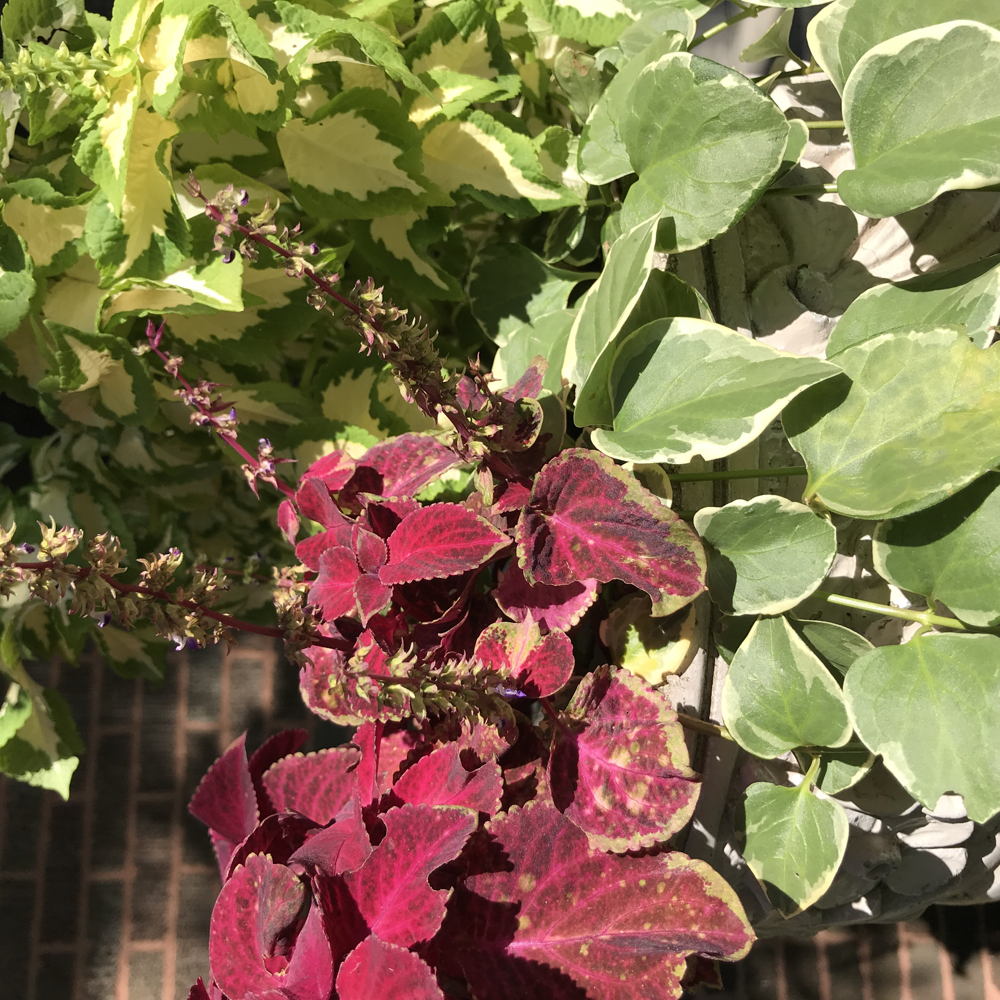
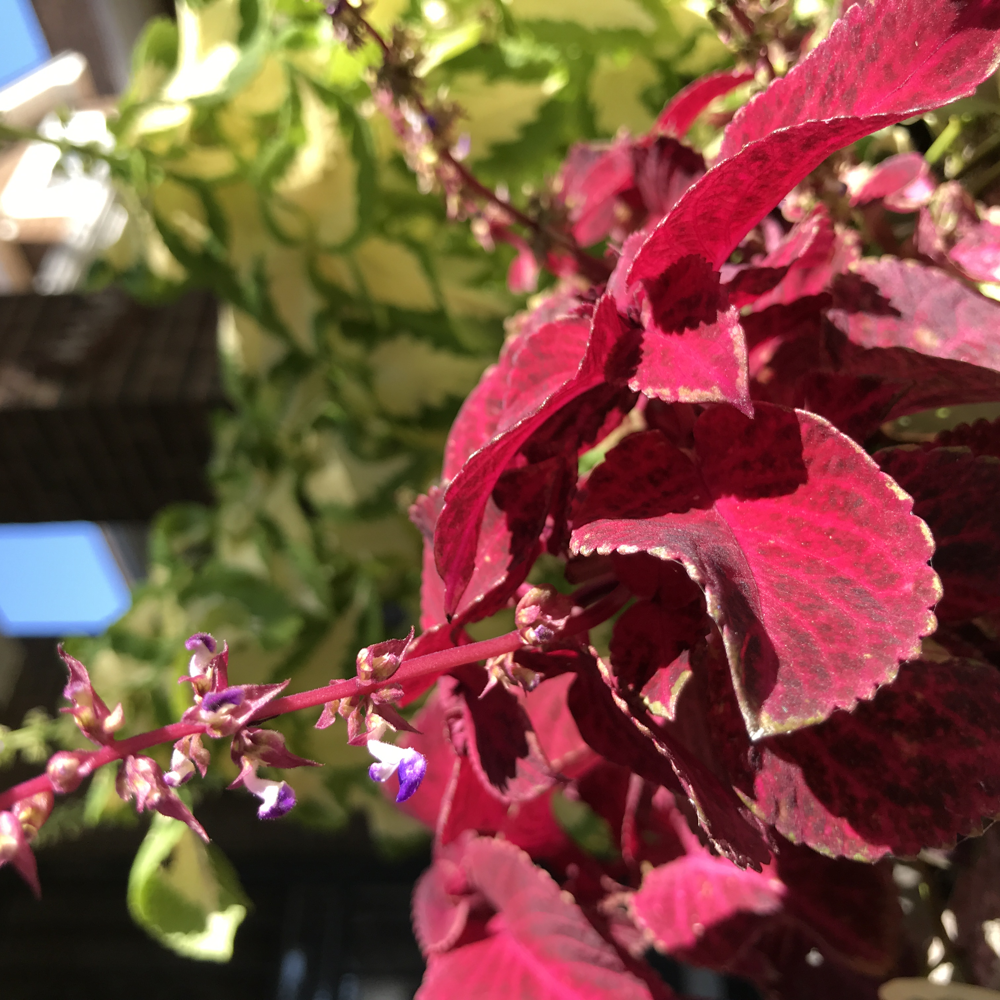

Autumn Coleus
- 
- 
Three images of coleus, a plant grown for its foliage rather than its flowers, showing red, green, and variegated varieties.
Three images of coleus, a plant grown for its foliage rather than its flowers, showing red, green, and variegated varieties.